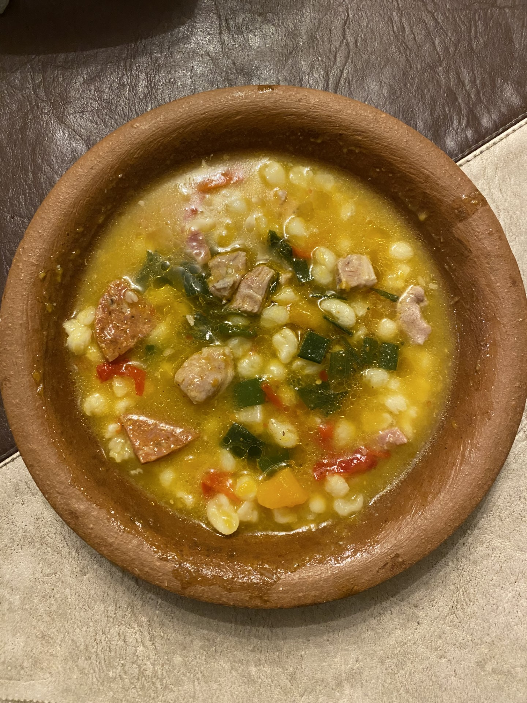

- Un kilo de maiz blanco pisado.
- Medio kilo de porotos.
- 4 chorizos y 2 chorizos colorados.
- Panceta salada.
- 2 morrones.
- 2 pechugas de pollo.
- 2 chuletas de cerdo.
- 1 zapallo/anco.
- 1 atado de cebolla de verdeo, aji molido, pimenton y media taza de caldo.
- Poner en remojo la noche anterior el maiz y porotos.
- Colar y hervir los porotos hasta que esten tiernos.
- Colocar el maiz con agua, a fuego fuerte.
- A media coccion colocar el pollo, cerdo, chorizos, panceta, y zapallo, (todo en trozos pequeños), y por ultimo los porotos.
- Colocar a fuego lento y revolver seguido, hasta que espese, (aproximadamente dos horas).
- Agregar sal, pimienta y aji molido si necesita.